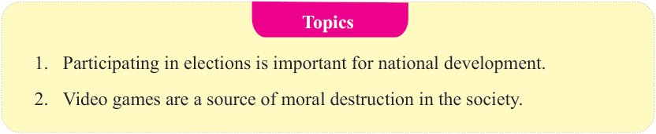
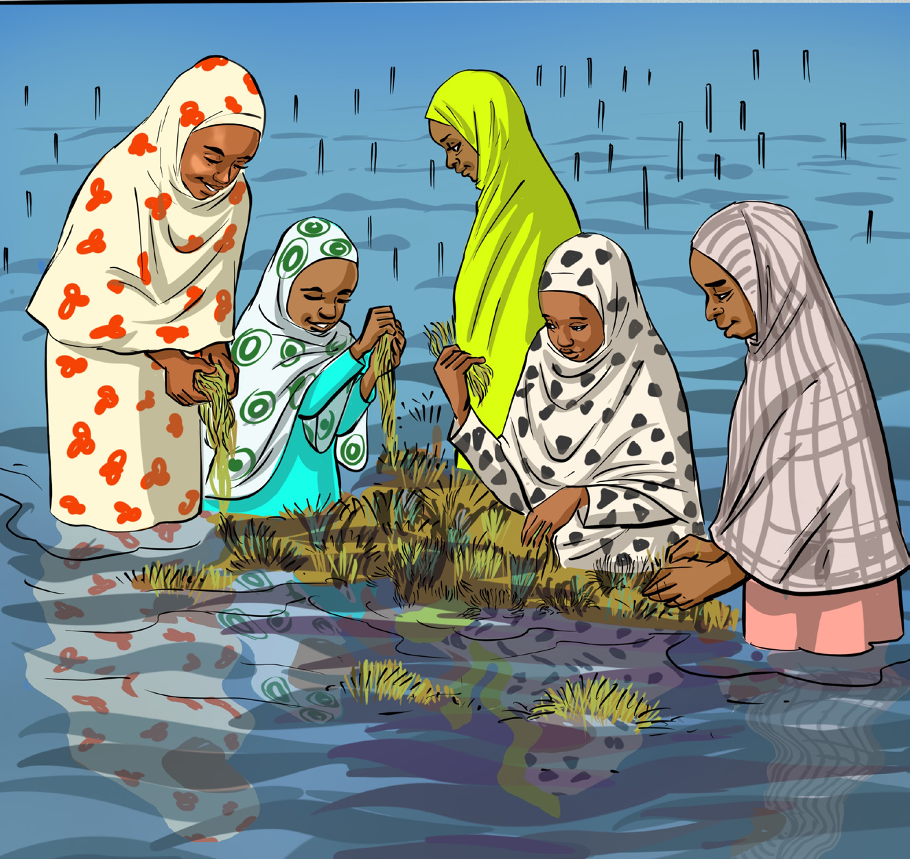

English for Secondary Schools Student’s Book Form One, printed page 46

Topics box listing two discussion topics: participating in elections is important for national development, and video games are a source of moral destruction in society.Topics
1.
Participating in elections is important for national development.
2.
Video games are a source of moral destruction in the society.
Vocabulary from written contexts
(a)
Read the following passage and answer the questions that follow.
Seaweed cultivation in Zanzibar
Seaweed cultivation in Zanzibar involves a simple and natural process. First, farmers tie small pieces of seaweed to ropes. These ropes are then placed in the shallow, clean water surrounding the island. Over a few weeks, the seaweed grows in the ocean’s gentle embrace. Healthy seaweed often has vibrant colours and looks fresh and plump. Once it is ready, the farmers harvest it by hand.

Five women in shallow sea water cultivate and harvest seaweed by hand.